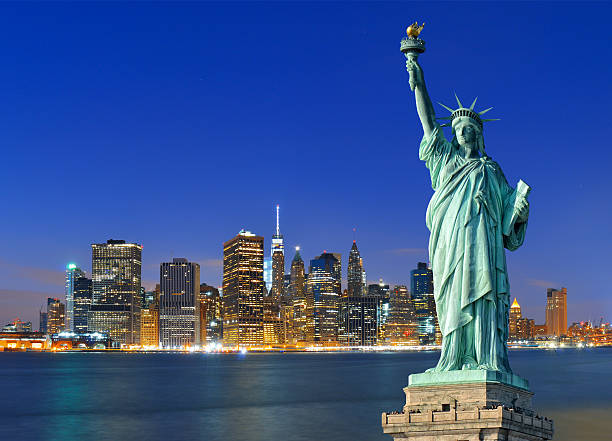
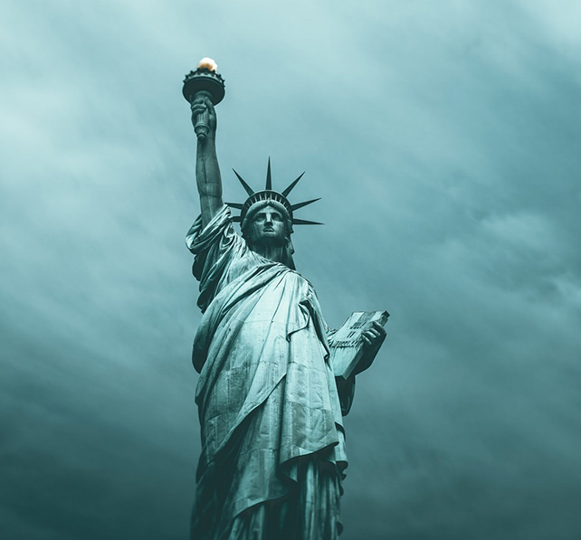
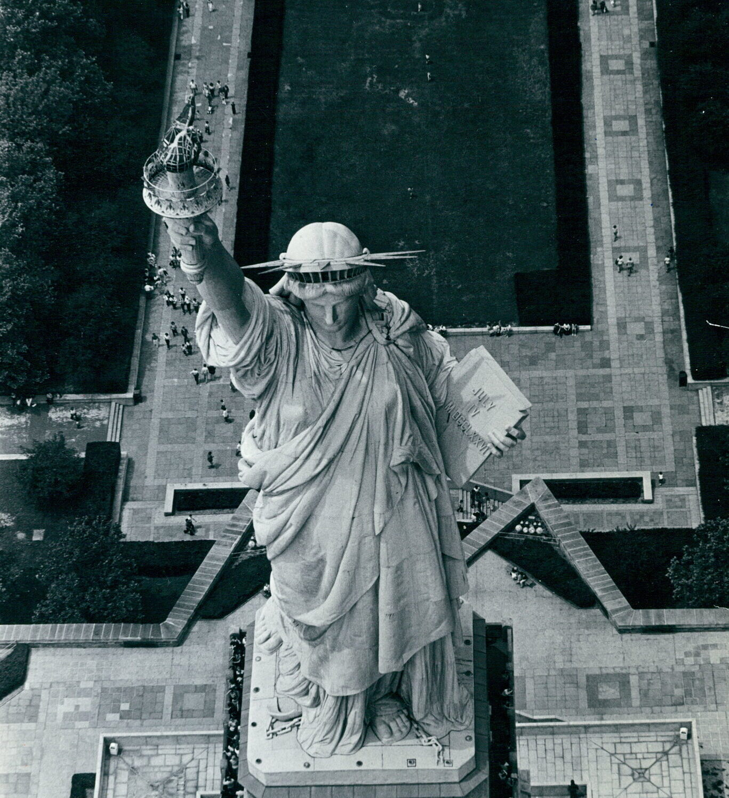

Statue of Liberty
Fun Facts
Statue of Liberty
Designed by the talented sculptor Frédéric Auguste Bartholdi, it was engineered by Gustave Eiffel, the mastermind behind the Eiffel Tower. The statue’s official name, "Liberty Enlightening the World," encapsulates its role as a beacon of hope and inspiration. It was constructed in France, disassembled, and then shipped to the United States in over 300 individual pieces before being reassembled on Liberty Island.
Statue of Liberty
The statue has undergone several restorations to preserve its grandeur. In 1984, a major restoration effort was undertaken in preparation for its centennial celebration in 1986. Recognized as a UNESCO World Heritage Site in 1984, the Statue of Liberty continues to stand as a global emblem of freedom and democracy. It remains one of the most visited landmarks in the world, attracting millions of tourists each year.
Statue of Liberty
Whether you visit in person or admire it from afar, Lady Liberty remains an enduring beacon of hope, reminding the world of the values it represents. It serves as a reminder that the pursuit of liberty and justice is an ongoing journey that unites people across generations and cultures.